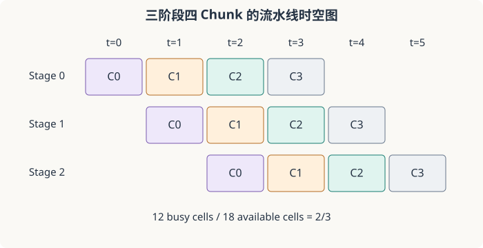
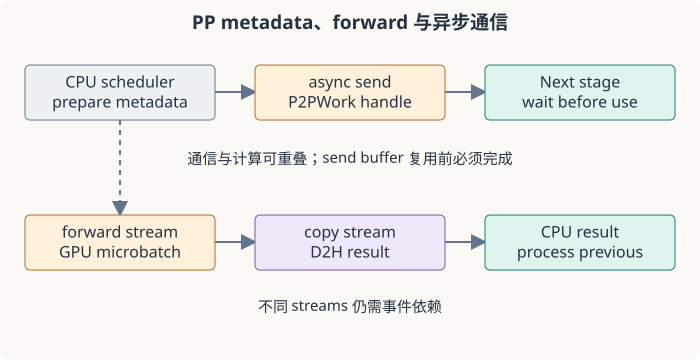

第 41 章 · SGLang 生产系统
Pipeline Parallelism：Microbatch、动态 Chunking 与异步 P2P
同一个长 Prompt 怎样让多个模型 stage 同时工作，而不破坏因果依赖？
同一个长 Prompt 怎样让多个模型 stage 同时工作，而不破坏因果依赖？ 从具体反例出发，连接算法、工程接口与测量边界。
1. 长上下文的 PP 不是训练流水线的原样复制
PP 把模型的层序列分到多个 stage，跨 stage 传 hidden activations，而本 stage 维护对应层的 KV。若长 prompt 完整通过每个 stage，下游只能等待；切成多个 prefill chunks 后，不同 chunks 可在不同 stage 计算。但同一 stage 必须先拥有历史 KV，不能任意乱序执行。与 TP 每层跨卡 collective、PCP 切 query 维分别比较。
2. 从依赖图推导流水线气泡
教学例：P=3 stages，M=4 chunks，每个 stage 的每 chunk compute 为一个时间单位，无通信。chunk j 在 stage i 必须等待上一个 stage 同一 chunk 和本 stage 前一 chunk 完成。最早时刻递推 F(i,j)=max(F(i−1,j),F(i,j−1))+1，边界为零。因此 6 个时间单位完成，串行需12，利用率12/18=2/3。

3. 理想吞吐与不平衡
等时长流水线 makespan 为 (P+M−1)t，理想平均利用率 M/(P+M−1)。这不包含 CPU、P2P 或 variable chunk cost；真实有慢 stage、异构链路和最后一个短 chunk。增加 M 可降低理想气泡，却增加调度与传输次数。
4. 动态 chunk 为什么要越来越短
拟合累计 prefill 时间 f(L)=aL²+bL+c，下一 chunk x 的增量目标为 T。展开 a x²+(2aL+b)x=T；取正根，若 a>0 且 b≥0，L 增加时 x 变小。教学 a=0.001、b=0.1、T=20，L=0 时 x=100，L=100 时 x≈56.16，说明固定 token 数不等于固定计算时间。
5. 预测不是最终 admission
DynamicChunkSizer 在 PP0 profile，广播样本，所有 rank 拟合同一模型，失败则回退固定大小。源码把正根向 base size 平滑，设置 base/4 下限，以 max(page_size,64) 对齐，并限制 context margin 与 max_chunk_size；二次对齐后太小返回 None。调度仍受 KV、token budget 与实际剩余 tokens 约束。
6. 异步 P2P 与生命周期
_pp_send_pyobj_to_next_stage 发起异步 metadata send 并返回 P2PWork；_pp_commit_comm_work 在正确的消费/复用边界等待。forward_stream 与 copy_stream 允许 GPU 执行和 D2H、CPU 处理重叠；P2PWork 未完成时不可覆盖发送缓冲。PD prefill/decode 有独立 event loops，不能从普通 PP 推断所有组合。

7. 实验设计与反例
慢 stage、长 prefix、不同 chunk 对齐、通信 bandwidth/latency 及最后 chunk 会改变 critical path。评估 per-stage busy time、bubble ratio、proxy bytes、TTFT 与吞吐，固定模型、拓扑及请求分布。区分 profile 的拟合误差与在线 drift，不把理想 2× 当成实测。
8. 交互：选择工作负载与反例
Pipeline Runtime 教学实验
单 chunk：P=3、M=1：3 ticks，利用率 1/3。
四 chunks：P=3、M=4：6 ticks，利用率 2/3。
慢中间 stage：四 chunks 的 stage 时间 [1,2,1]：总时间 10 ticks；最慢 stage 限制 steady state。
教学模型仅验证机制与反例，不代表真实 GPU benchmark。
9. CPU 最小实验
下载 pipeline_chunking.py，使用标准库运行。源文件包含确定性输出及正反例断言。
python3 examples/pipeline_chunking.py实验是教学抽象，不运行真实 GPU serving、collectives 或网络传输。
10. 源码阅读路线与证据
固定上游快照 b323e8e6e3aacfe606b11a2ef51ae73bc8b283a7，区分当前实现、工程建议及教学推导。
- Implementation Refactoring based on Async Communication：Microbatch loop uses asynchronous P2P handles and separate forward/copy streams.
- SchedulerPPMixin.event_loop_pp：The scheduler has a dedicated PP event loop.
- _pp_commit_comm_work / _pp_send_pyobj_to_next_stage：Communication handles are committed separately from sending metadata.
- DynamicChunkSizer.profile_and_fit / predict：PP0 profiles latency samples; ranks fit shared samples and predict chunk size.
- ChunkSizePredictor.predict_next_chunk_size：The predictor solves a quadratic increment, smooths, floors, aligns and constrains the chunk.